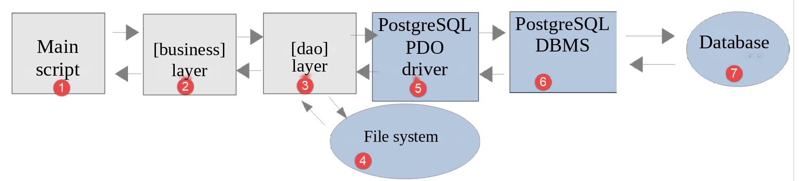

14. Exercício de aplicação – Versão 6
Acabamos de implementar a seguinte estrutura em camadas:

O SGBD usado nos exemplos era o MySQL. No capítulo anterior, observamos que nada nas classes que implementam a camada [dao] sugeria o uso de um SGBD específico. Vamos agora verificar isso usando outro SGBD, o PostgreSQL. A arquitetura em camadas passa a ser a seguinte:

A versão 6 não contém nenhuma classe nova: ela usa as classes da versão 5. Contém apenas arquivos de dados e novos scripts principais:
14.1. Instalação do SGBD PostgreSQL
O curso de PHP 7 baixava o instalador do PostgreSQL para Windows do site https://www.postgresql.org/download/, executava-o e depois alterava o serviço do Windows do PostgreSQL, que era iniciado automaticamente na inicialização do sistema, para inicialização manual. Com o [Laragon], é mais simples. O PostgreSQL não vem instalado por padrão, mas o [Laragon] pode adicioná-lo por conta própria:
- clique com o botão direito na janela do [Laragon] (ou em seu ícone na barra de tarefas) para abrir o menu;
- selecione [Tools > Quick add]. A lista mostra os softwares que o [Laragon] pode baixar e instalar, incluindo uma ou mais versões do PostgreSQL, como [postgresql-17];
- Clicar na versão desejada inicia o download e a instalação. O PostgreSQL é instalado na pasta [<laragon>/bin/postgresql], e seus dados na pasta [<laragon>/data/postgresql-NN];
- O botão [Start All] agora inicia o PostgreSQL junto com o Apache e o MySQL. A janela do [Laragon] indica que ele está escutando na porta 5432, sua porta padrão.
Se a versão desejada do PostgreSQL não estiver na lista, você pode adicioná-la: o menu [Tools > Quick add > Configuration] abre o arquivo [<laragon>/usr/packages.conf], que associa cada programa ao endereço de seu arquivo compactado. Adicione (ou modifique) uma linha no formato [postgresql-17=<address of the zip archive>], em que o arquivo é o arquivo de "binaries" do PostgreSQL para Windows fornecido pela empresa EDB (o link "zip archive" da página https://www.enterprisedb.com/download-postgresql-binaries). Alternativamente, sem usar esse menu, você pode extrair esse arquivo por conta própria em uma subpasta de [<laragon>/bin/postgresql]: o [Laragon] a encontrará na próxima vez que for iniciado, e a versão a ser usada pode ser selecionada no menu [PostgreSQL > Version].
O PostgreSQL é usado apenas neste capítulo e no próximo. Ele só funciona quando o [Laragon] está em execução, e você pode pará-lo pelo menu [PostgreSQL] do [Laragon].
Como o MySQL, o PostgreSQL tem um administrador, o superusuário [postgres]. Na instalação feita pelo [Laragon], normalmente ele não tem senha. Se uma senha tiver sido atribuída a ele, as ferramentas a solicitarão.
O terminal do [Laragon] dá acesso ao cliente de linha de comando do PostgreSQL, [psql], que equivale ao cliente [mysql]. O menu [PostgreSQL] do [Laragon] também oferece a ferramenta gráfica [pgAdmin] quando ela está instalada. A documentação do PostgreSQL está disponível em https://www.postgresql.org/docs/.
14.2. Ativação da extensão PDO para o SGBD PostgreSQL
O driver PDO para PostgreSQL é a extensão [pdo_pgsql] do PHP. Ela é ativada da mesma forma que o driver do MySQL:
- ou no menu do [Laragon]: PHP / Extensions / pdo_pgsql;
- ou verificando se a linha a seguir não está comentada (sem ponto e vírgula no início da linha) no arquivo [php.ini] (menu PHP / php.ini do [Laragon]):
Depois de salvar a alteração, reinicie os serviços do [Laragon] (botão [Reload]). Em seguida, verifique se o driver está presente usando o script [pdo-drivers.php] da seção sobre MySQL, executado na pasta [scripts-console/mysql]:
O driver [pgsql] é um dos drivers disponíveis.
14.3. Criação do banco de dados [dbtaxes-2019]
Usando o PostgreSQL, criaremos:
- um usuário chamado [admtaxes] com a senha [pwdtaxes];
- um banco de dados chamado [dbtaxes-2019], do qual esse usuário será o proprietário;
- nesse banco de dados, as tabelas [tbbrackets] e [tbconstants].
O curso de PHP 7 tratava essa tarefa com a ferramenta de administração [pgAdmin], uma aplicação web que precisa ser instalada além do SGBD. Como no MySQL, escreveremos um script SQL: [Data/postgres-dbtaxes-2019.sql]:
Comentários
- Linhas 7–8: excluímos o banco de dados e o usuário, se existirem, para que o script possa ser executado novamente. No PostgreSQL, um nome que contém hífen é colocado entre aspas duplas, e não entre crases como no MySQL: essa é a primeira diferença entre os scripts dos dois SGBDs;
- Linha 9: o PostgreSQL chama seus usuários de "roles" (papéis). O atributo [LOGIN] autoriza o papel [admtaxes] a se conectar ao SGBD;
- Linha 10: criação do banco de dados [dbtaxes-2019]. Seu proprietário é [admtaxes], o que lhe concede todos os direitos sobre o banco de dados. A codificação de caracteres é UTF-8. O banco de dados é construído a partir do banco de dados modelo [template0], que aceita qualquer codificação de caracteres;
- Linha 13: essa linha não é um comando SQL, mas um comando do cliente [psql] (começa com uma barra invertida). Ela conecta o cliente ao banco de dados [dbtaxes-2019] que acabou de ser criado. No PostgreSQL, não há equivalente ao comando [USE] do MySQL: uma conexão opera em um único banco de dados;
- Linha 16: os comandos seguintes são executados sob a identidade de [admtaxes], que será, portanto, o proprietário das tabelas criadas;
- Linhas 19–25: a tabela [tbbrackets]. A chave primária [id] é do tipo [INTEGER GENERATED ALWAYS AS IDENTITY]: é o SGBD que gera seus valores durante as inserções, assim como o atributo [AUTO_INCREMENT] fazia no MySQL. Essa sintaxe está em conformidade com o padrão SQL; [AUTO_INCREMENT] é específico do MySQL. O tipo [NUMERIC] equivale ao tipo [DECIMAL] do MySQL;
- Linhas 28–41: a tabela [tbconstants]. Os nomes das colunas são escritos em minúsculas, com as palavras separadas por sublinhados (half_share_qf_ceiling).
Por que esses nomes de colunas? Uma particularidade do PostgreSQL é que os nomes de colunas podem diferenciar maiúsculas de minúsculas, o que normalmente não ocorre com outros SGBDs. Por exemplo, com o MySQL, a consulta [select limits, coeffR, coeffN from tbbrackets] funciona mesmo que as colunas reais da tabela [tbbrackets] sejam [LIMITS, COEFFR, COEFFN]. Com o PostgreSQL, ela não funciona, porque o PostgreSQL converte para minúsculas os nomes que não estão entre aspas duplas: na verdade, ele executa o comando [select limits, coeffr, coeffn from tbbrackets]. Para evitar isso, é preciso usar [select "LIMITS", "COEFFR", "COEFFN" from tbbrackets], ou seja, colocar os nomes das colunas entre aspas duplas. Por essas razões, damos às colunas nomes em minúsculas e não podemos reutilizar os nomes em camelCase (halfShareQfCeiling) do banco de dados MySQL. Os nomes de objetos de banco de dados podem ser fonte de incompatibilidade entre SGBDs, pois certos nomes são palavras reservadas em alguns SGBDs, mas não em outros.
Este script deve ser executado pelo superusuário [postgres]. No terminal do [Laragon] aberto na pasta [version-06/Data], digite o comando a seguir (a opção [-U] especifica o nome do usuário, e a opção [-f] especifica o arquivo a ser executado):
- Linhas 2 e 4: avisos (NOTICE) dos comandos [DROP ... IF EXISTS] durante a primeira execução: o banco de dados e o papel não existiam;
- As demais linhas são os logs dos comandos executados.
Verificamos o resultado conectando-nos ao banco de dados como [admtaxes]. A opção [-h localhost] exige uma conexão de rede com a máquina local, como fará o PHP. O [psql] então solicita a senha de [admtaxes], a menos que o servidor confie nas conexões locais (veja a seção sobre testes, adiante). A opção [-c] passa um comando a ser executado; o comando [\dt] do [psql] lista as tabelas do banco de dados:
e o comando [\d tbbrackets] exibe a estrutura da tabela [tbbrackets]:
- Linha 5: a chave primária [id], gerada pelo SGBD (sempre gerada como identidade);
- Linhas 9–10: o índice da chave primária.
O PostgreSQL também pode ser gerenciado graficamente. A ferramenta [HeidiSQL] fornecida com o [Laragon] pode se conectar a um servidor PostgreSQL (tipo de rede "PostgreSQL (TCP/IP"), porta 5432). A ferramenta [pgAdmin] do curso de PHP 7 também pode ser usada ([https://www.pgadmin.org/]).
14.4. Preenchimento do banco de dados [dbtaxes-2019]
Já fizemos esse trabalho com o SGBD MySQL na versão 5. Basta modificar o arquivo [database.json], que descreve o banco de dados. O arquivo [version-06/Data/database.json] é o seguinte:
- Linha 2: o DSN mudou; o prefixo [pgsql] indica que se trata do SGBD PostgreSQL. A porta não é especificada: é a porta padrão do PostgreSQL, 5432;
- linhas 5 e 10: os nomes das tabelas são prefixados com o nome do esquema ao qual pertencem, [public]. Um banco de dados PostgreSQL pode conter vários esquemas, que servem como namespaces para as tabelas. Isso não era estritamente necessário, já que [public] é o esquema padrão usado quando nenhum esquema é especificado no nome da tabela;
- linhas 11–20: os nomes das colunas da tabela de constantes mudaram.
O script [Main/MainTransferAdminDataFromJsonFile2PostgresDatabase.php] para preencher o banco de dados [dbtaxes-2019] é o seguinte:
Comentários
Apenas as linhas 10–15, que carregam os arquivos necessários para executar a aplicação, mudaram em relação ao script da versão 5: os arquivos agora estão na pasta [version-05], adjacente à pasta [version-06]. As constantes das linhas 18–19 referem-se aos arquivos da pasta [version-06/Data].
Quando esse script é executado, obtém-se o seguinte resultado:
e o seguinte conteúdo na tabela [tbbrackets]:
Repetimos o mesmo processo para a tabela de constantes [tbconstants]. A opção [-x] do [psql] exibe cada linha na vertical:
Desta vez, o método [PDO::connect] criou um objeto da classe [Pdo\Pgsql], e o driver do PostgreSQL foi usado, sem que uma única linha da classe [DaoTransferAdminDataFromJsonFile2Database] fosse modificada. Observe que, para executar o script, não são necessários nem o servidor Apache nem o SGBD MySQL: apenas o SGBD PostgreSQL precisa estar iniciado.
14.5. Cálculo do imposto
As camadas [dao] [3] e [business] [2] já foram escritas. Já escrevemos o script principal para o SGBD MySQL na versão 5. Basta pegar o script [MainCalculateTaxWithTaxAdminDataInMySQLDatabase.php] e adaptá-lo para o SGBD PostgreSQL. Ele agora se chama [MainCalculateTaxWithTaxAdminDataInPostgresDatabase.php]:
Comentários
Mais uma vez, apenas as linhas 10–19, que carregam os arquivos da versão 5, mudaram. Os arquivos JSON usados são os da pasta [version-06/Data], em particular o arquivo [database.json], que descreve o banco de dados PostgreSQL.
Resultados da execução
Os arquivos [errors.json] e [results.json] gerados na pasta [version-06/Data] são idênticos aos obtidos com o banco de dados MySQL na versão 5.
14.6. Testes com [PHPUnit]
Como nas versões anteriores, validamos esta versão com testes [PHPUnit]. As classes de teste [DaoTest] e [BusinessTest] da pasta [version-06/Tests] são as mesmas da versão 5. A única mudança é o ambiente de teste: os arquivos da aplicação são carregados da pasta [version-05], e os dados vêm da pasta [version-06/Data].
14.6.1. Teste da camada [dao]
O início do teste [Tests/DaoTest.php] é o seguinte:
Comentários
- Linhas 21–30: definição do ambiente de teste: as classes da camada [dao] da versão 5 são carregadas;
- linha 35: os dados de teste são da versão 6, em particular o arquivo [database.json] do banco de dados PostgreSQL.
Os métodos de teste são os da versão 5, com uma exceção. O arquivo [database-incomplete.json] na pasta [Tests/data] é o arquivo da versão 5 adaptado para o banco de dados PostgreSQL. No entanto, o caso de teste de "senha incorreta" da versão 5 foi substituído por um caso de teste de "usuário inexistente":
- Linha 102: o arquivo [database-nonexistent-user.json] descreve o banco de dados com um usuário chamado [unknown], que o PostgreSQL não reconhece. A conexão falha, e a camada [dao] dispara uma [TaxException] com o código 30.
Por que essa mudança? Para cada tipo de conexão, um servidor PostgreSQL seleciona um método de autenticação especificado em seu arquivo de configuração [pg_hba.conf] (na pasta de dados do PostgreSQL, [<laragon>/data/postgresql-NN] com o [Laragon]). O método [scram-sha-256] verifica a senha. O método [trust], por outro lado, confia no cliente: ele aceita a conexão sem verificar a senha, desde que o usuário exista. Esse é o método usado pela instalação do PostgreSQL criada pelo [Laragon] para conexões originadas da máquina local, o que explica por que o superusuário [postgres] não tem senha. Com essa configuração, uma senha incorreta é aceita: o teste de "senha incorreta" falharia, pois a exceção esperada não é lançada. Um usuário inexistente, por outro lado, tem o acesso negado independentemente do método de autenticação: o teste funciona em todas as instalações. O método [trust] é conveniente em uma máquina de desenvolvimento; obviamente, não deve ser usado em um servidor de produção.
14.6.2. Teste da camada [business]
Da mesma forma, o teste [Tests/BusinessTest.php] é o da versão 5 com um ambiente modificado:
14.6.3. Execução dos testes
O SGBD PostgreSQL deve estar iniciado. Os resultados dos testes são os seguintes:
Todos os 18 testes passaram, usando um banco de dados PostgreSQL em vez de um banco de dados MySQL. A aposta feita no início do capítulo deu certo: a transição do MySQL para o PostgreSQL não exigiu nenhuma mudança nas classes da aplicação, apenas uma nova descrição de banco de dados no arquivo [database.json]. É preciso reconhecer, porém, que tivemos de adaptar os nomes das colunas e o código dos scripts SQL usados para criar os bancos de dados, e que nossos comandos SQL permaneceram muito simples ([select], [insert], [delete]).